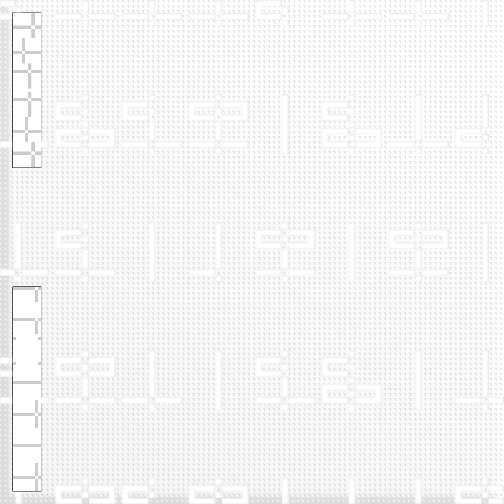

::
index/output/audio/heoliene/signal juicer
input
audio
/
heoliene
/
8044
output
/
visual
gipnoza
static dance
osa
telehelium
compilations
clumsy
signal juicer
/
limbo 54
music for clean rooms
inpulse
You can download the ep
here
.
2020.12
signal juicer tracklisting
1.
Rhythmic Imaging
01:04
2.
Anti Stereo
03:08
3.
Elegant Fusion
04:06
4.
Signal Juicer
02:01
2020.11
signal juicer cover

about
|
contact
|
source